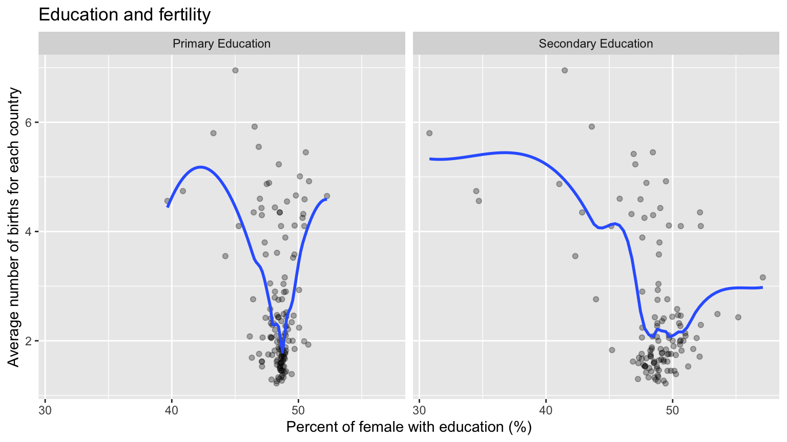

Before investigating if there is a strong correlation between female education and fertility decline, we expected to see an increase in women’s educational levels which may correlate to a fertility trend.
The graph below has changes in the percentage of females of total pupils enrolled in secondary education throughout the years. We selected five countries on different continents and four different years ranging from 1986 to 2015. The graph reveals that in most countries, the percentages are becoming equal over the years: most countries have reached above 45 percent. Countries in Asia and Africa have improved significantly. What’s more, since, in the first map, total fertility over the world still has a significant difference, this indicates that secondary education wouldn’t be the only factor that affects the average number of births.1
This scatterplot reveals the correlation between total fertility and the percentage of females in both primary and secondary education in 2015. Each dot represents the combined statistics for a country. There are around 143 countries in total.

In general, corresponding to the last graph, we find that by 2015, most countries including the developed and the developing countries have more than 45% of females with either education level. We observed that most dots clustered where the education level is high and the average number of births is low. The average number of births is also around two which is the global average fertility rate. With our LOESS smooth layer, we see that there’s a decline of total fertility as the percent of females with education increases. And outliers with very high fertility must have a relatively low percentage of female education.
Therefore, educated women generally have fewer births than uneducated women. The correlation between fertility and educational attainment is strong and varies among women of different education levels (primary and secondary education).2
“Secondary Education, pupils (% Female).” The World Bank, https://data.worldbank.org/indicator/SE.SEC.ENRL.VO.FE.ZS?end=2019&start=2019&view=bar.↩
“Female education and its impact on fertility.” IZA World of Labor, https://wol.iza.org/uploads/articles/228/pdfs/female-education-and-its-impact-on-fertility.pdf.↩